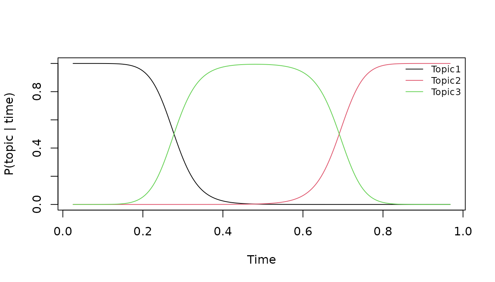
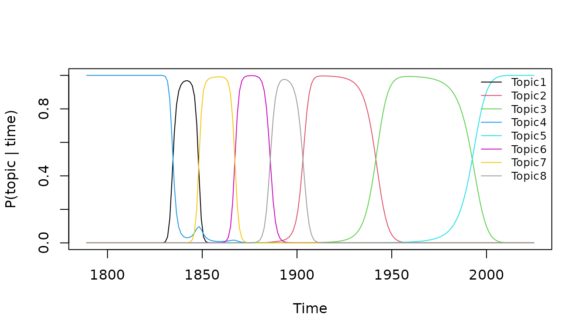

Topics over Time (TOT; Wang and McCallum, 2006) is a topic model in which every topic has, besides its distribution over words, a Beta distribution over continuous time. Topics are therefore found jointly from word co-occurrence and from when documents were written. Time is neither discretized nor modeled with Markov dynamics, and the meaning of a topic is constant: what changes over time is how often each topic occurs.
A simulated corpus
library(topicsovertime)
set.seed(1)
sim <- simulate_tot(n_docs = 300, n_topics = 3)
fit <- tot(sim$x, sim$time, k = 3, n_iter = 200)
fit
#> Topics over Time model
#> topics: 3, documents: 300, vocabulary: 100
#> iterations: 200, alpha: 16.66667, beta: 0.1, time_weight: 1
#> time range: 0.02560277 to 0.967983
fit$psi # Beta parameters on the normalized time scale
#> shape1 shape2
#> Topic1 2.207427 15.892580
#> Topic2 13.158485 1.811005
#> Topic3 7.915801 8.643318
plot(fit) # P(topic | time)
U.S. presidential inaugural addresses
The paper analyses State of the Union addresses; the inaugural addresses shipped with quanteda are a similar corpus spanning more than two centuries.
library(quanteda)
#> Package version: 4.5.1
#> Unicode version: 17.0
#> ICU version: 78.2
#> Parallel computing: disabled
#> See https://quanteda.io for tutorials and examples.
toks <- tokens(data_corpus_inaugural, remove_punct = TRUE,
remove_numbers = TRUE)
toks <- tokens_remove(tokens_tolower(toks), stopwords("en"))
x <- dfm_trim(dfm(toks), min_termfreq = 5)
year <- docvars(data_corpus_inaugural, "Year")
set.seed(2026)
fit <- tot(x, year, k = 8, n_iter = 300)
terms(fit, 8)
#> Topic1 Topic2 Topic3 Topic4 Topic5
#> [1,] "government" "government" "us" "government" "us"
#> [2,] "people" "can" "world" "may" "america"
#> [3,] "states" "must" "can" "people" "nation"
#> [4,] "power" "upon" "people" "states" "must"
#> [5,] "upon" "people" "peace" "great" "people"
#> [6,] "may" "world" "new" "public" "new"
#> [7,] "constitution" "great" "must" "country" "world"
#> [8,] "one" "nation" "freedom" "every" "can"
#> Topic6 Topic7 Topic8
#> [1,] "government" "shall" "people"
#> [2,] "people" "can" "upon"
#> [3,] "country" "states" "government"
#> [4,] "upon" "constitution" "public"
#> [5,] "states" "government" "states"
#> [6,] "constitution" "upon" "shall"
#> [7,] "public" "may" "must"
#> [8,] "great" "people" "congress"
plot(fit)
predict() folds new documents into a fitted model;
type = "time" predicts when a document was written:
pred <- predict(fit, x, type = "time")
head(data.frame(actual = year, predicted = round(pred)))
#> actual predicted
#> 1789-Washington 1789 1857
#> 1793-Washington 1793 1873
#> 1797-Adams 1797 1849
#> 1801-Jefferson 1801 1861
#> 1805-Jefferson 1805 1851
#> 1809-Madison 1809 1859
cor(pred, year)
#> [1] 0.9167397Balancing words and time
Each token carries the document’s timestamp, so a long document’s
time contributes many times to the likelihood. time_weight
rescales that contribution: 1 is the sampler exactly as in
the paper, and "inverse_length" counts each timestamp once
per document. The paper notes that results are sensitive to this setting
and recommends tuning it.
Reference
Wang, X. and McCallum, A. (2006). Topics over time: a non-Markov continuous-time model of topical trends. KDD ’06, 424–433. https://doi.org/10.1145/1150402.1150450